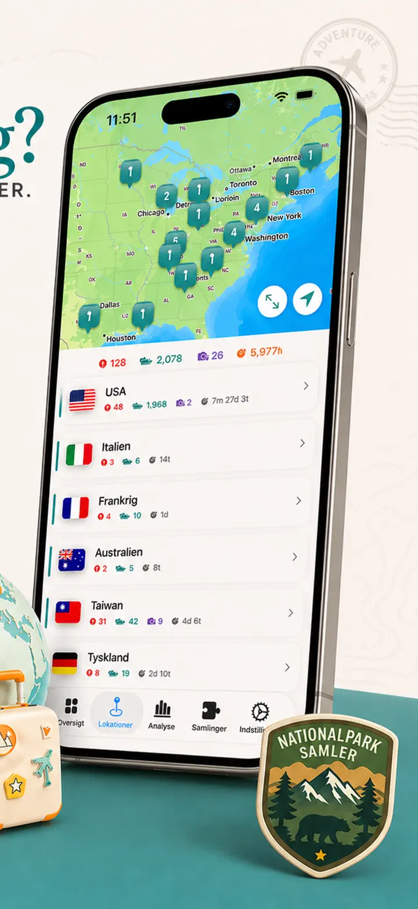
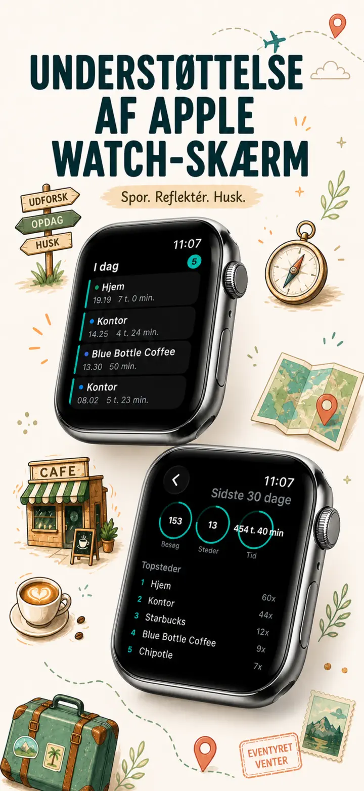
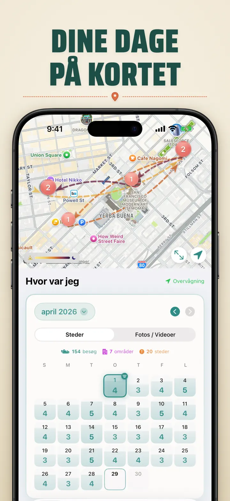
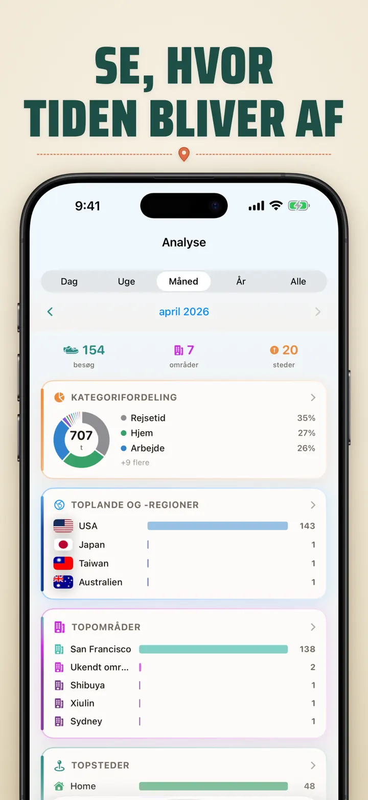
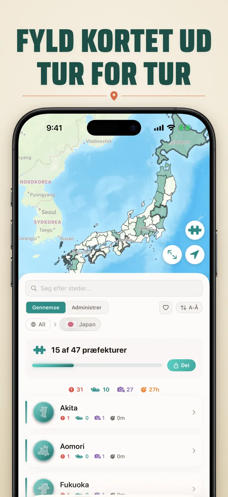
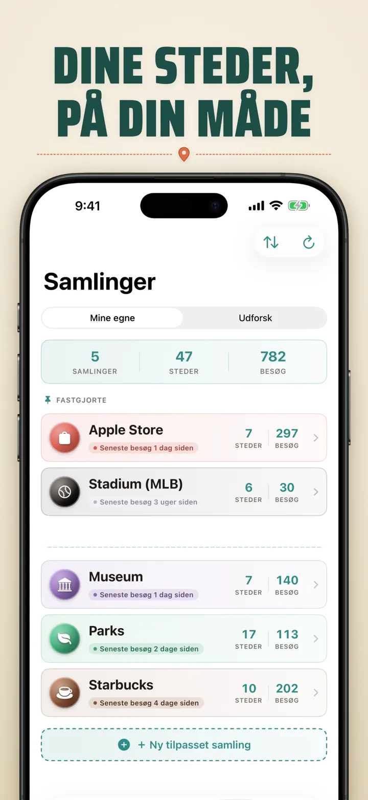
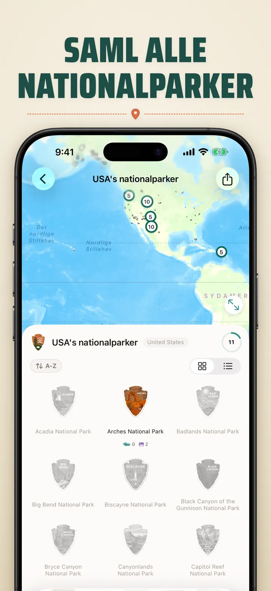
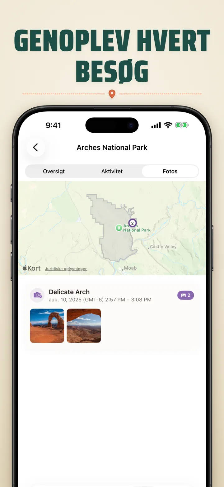

Hvor var jeg?
Spor steder/fotos & fremgang
Nyt: Japans 103 Ichinomiya-helligdomme, hver med sit eget træskårne emblem. Automatisk besøgssporing og en privat tidslinje, alt sammen på din enhed.
Hent i App StoreOm appen
Where was I ? — Din personlige stedhukommelse
Har du nogensinde forsøgt at huske den fantastiske restaurant fra sidste måned? Where was I ? sporer automatisk dine besøg og bygger en smuk tidslinje over din livs rejse.
AUTOMATISK SPORING
Ingen manuel logning nødvendig. Appen registrerer lydløst, hvornår du ankommer til og forlader steder, og opretter en detaljeret besøgshistorik uden nogen indsats fra din side.
SMART KALENDERVISNING
Se dine besøg organiseret efter dag, uge eller måned. Den intuitive kalender viser besøgsantal og unikke steder med et blik. Tryk på en dag for at se præcis, hvor du var.
HJEM- & LÅSESKÆRM-WIDGETS
Se dine seneste besøg med et blik med den mellemstore Hjem-widget. Låseskærm-widgets viser din nuværende placering, en live-opholdstimer eller dagens besøgsantal — alle tryk-bare for at springe direkte ind i appen.
ORGANISEREDE STEDER
Steder grupperes automatisk efter region og by. Tildel brugerdefinerede kategorier som Hjem, Arbejde, Fitnesscenter eller Café. Opret dine egne kategorier med tilpassede ikoner og farver, der passer til din livsstil.
KRAFTFULD ANALYSE
Opdag mønstre i dit liv:
- Tidsfordeling på tværs af kategorier
- Dine mest besøgte steder
- Ugentlig rytmeanalyse
- Besøgsfrekvenstendenser
- Diagram over opholdstid pr. sted — se hvor længe du typisk bliver, pr. dag, uge, måned eller år
LANDES-REGIONS-SAMLING
Gør dine rejser til et puslespil! Se hvor mange stater, provinser eller regioner du har besøgt i hvert land. Del dine fremskridt som et puslespilsbillede.
NATIONALPARKFREMGANG
Udforsk naturen! Log automatisk dine besøg i nationalparker.
JAPANS 100 BERØMTE SLOTTE
Rejser du i Japan? En ny indbygget samling sporer dine besøg til landets 100 berømte slotte. Findes i Samling-fanen → Udforsk → Japan.
EGNE SAMLINGER
Spor hvad du vil — Apple Stores, museer, bryggerier, boghandlere. Opret en samling, vælg nøgleord, og se den fyldes op automatisk. Hver samling viser antal, besøgshistorik og et kort.
IMPORTÉR DIN STEDHISTORIK
Kommer du fra en anden app? Tag hele din historik med dig — formatet registreres automatisk, store eksporter håndteres, og du ser en forhåndsvisning, før noget importeres:
- Google Timeline (Google Maps-eksport eller Google Takeout)
- Arc Timeline (de månedlige .json-filer, du eksporterer fra Arc)
- Moves (ProtoGeo / Facebook Moves-backup)
MASSEADMINISTRATION
Administrer alle dine steder ét sted. Søg, sorter og filtrer. Vælg flere steder for at kategorisere eller slette dem samlet. Hold dit stedsbibliotek rent og organiseret.
PRIVATLIV FØRST
Dine placeringsdata forbliver på din enhed. Ingen konti kræves. Ingen data sendes til servere. Dine bevægelser er din sag.
PERFEKT TIL:
- Sporing af arbejdstimer og steder
- Huske restauranter og butikker du har besøgt
- Analyse af din daglige rutine
- Føre rejsedagbog og logge nationalparkbesøg
- Udgiftsrapportering og kilometersporing
- Forstå din tidsallokering
FUNKTIONER:
- Automatisk ankomst- og afgangsdetektion
- Kalendervisning med daglig besøgstidslinje
- Hjem- og låseskærm-widgets med deep-linking
- Stedgruppering efter region og by
- Brugerdefinerede kategorier med ikoner og farver
- Smarte kategoriforslag fra Apple Maps
- Detaljeret besøgshistorik med varighed
- Diagram over opholdstid pr. sted (dag / uge / måned / år)
- Analysedashboard med indsigt
- Søg og filtrer steder
- Landes-regions-samling med delbart puslespilsbillede
- Sporing af nationalparkfremgang
- Indbygget samling Japans 100 berømte slotte
- Egne samlinger med automatisk nøgleordsmatch, manuel redigering og statistik
- Masseadministration af steder
- Import fra Google Timeline, Arc Timeline og Moves
- Eksportfunktioner
- Ingen konto kræves
- Privatlivsfokuseret design
Begynd at bygge din stedhukommelse i dag. Hent Where was I ? og glem aldrig hvor du har været.
Privacy Policy: https://masawata.net/privacy-policy.html Terms Of Service: https://www.apple.com/legal/internet-services/itunes/dev/stdeula/
Skærmbilleder








Hvor var jeg?
Nyt: Japans 103 Ichinomiya-helligdomme, hver med sit eget træskårne emblem. Automatisk besøgssporing og en privat tidslinje, alt sammen på din enhed.
Hent i App Store